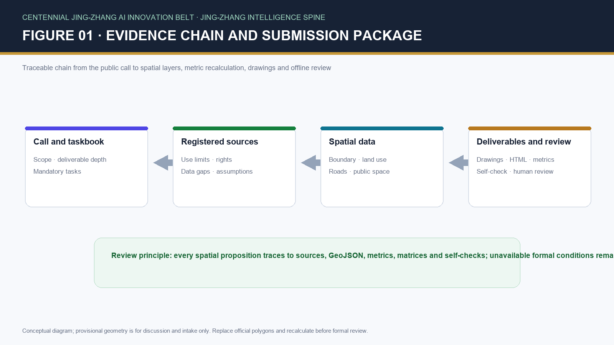
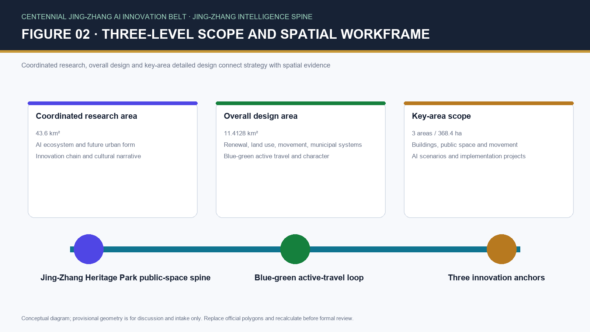
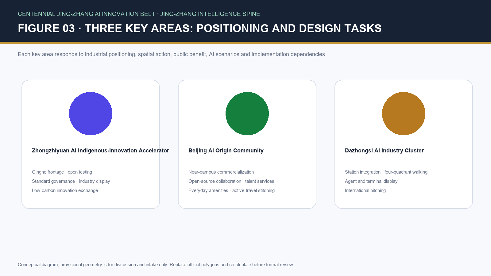
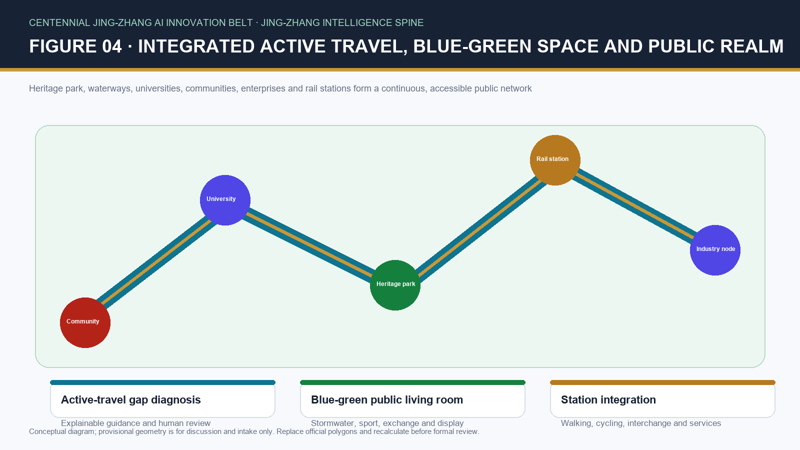
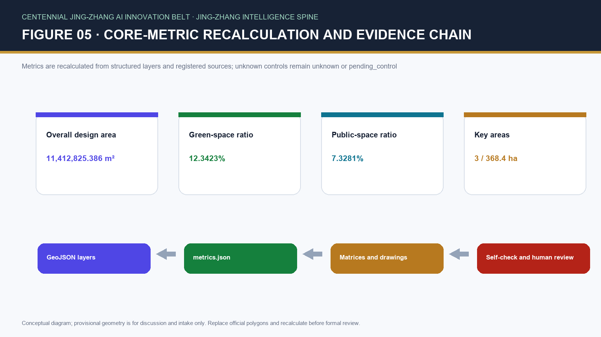

Jing-Zhang Intelligence Spine: A Verifiable Public AI Innovation Corridor
A concept package for AI-oriented urban design built from provisional boundaries and structured evidence. Boundary accuracy, eligibility, scoring and acceptance remain subject to the organiser's formal rules and maintainer/reviewer judgment.
Jing-Zhang Intelligence Spine: A Verifiable Public AI Innovation Corridor
Core design proposition: turn the “innovation belt” from a display corridor into a public urban interface that can be booked, tested, reviewed and operated over time. The memory of the Beijing–Zhangjiakou railway supplies a timeline; blue-green space supplies everyday access; and the three key areas supply a continuous validation chain from research and open source to industrial transformation. Every spatial intervention is a conceptual recommendation to be refined after formal boundaries, regulatory plans and professional conditions are confirmed.
Design basis and source register
This formal proposal takes the Prequalification Announcement for the International Urban Design Proposal Call for the Centennial Jing-Zhang AI Innovation Belt, issued by the Haidian Branch of the Beijing Municipal Commission of Planning and Natural Resources, as its primary basis. Its machine-readable basis is the maintainer-registered provisional coarse boundary, key areas, enumerations, metrics and source list in brief/site-package/. Before generating the scheme, an AI agent must read design_brief.json, allowed_design_space.json, sources.json, enums/, ranges/, schemas/, data/source_registry.json and data/processed/agent_fact_pack.md, and use project_scope_summary.csv, agent_task_requirements.csv, source_use_matrix.csv and missing_data_checklist.csv to establish tasks, scope, permitted uses and gaps. Each design judgment is separated into traceable sources, recalculable metrics, checkable layers and assumptions suitable for human review. The call requires urban-design depth equivalent to regulatory detailed planning and an integrated planning-implementation proposal; prose cannot substitute for GeoJSON, metric tables, the A3 booklet, A0 boards and the HTML presentation.
The proposal is therefore not a standalone vision statement. It organizes deliverables from the announcement, the agent taskbook and the site package, placing the most important evidence next to the relevant judgment Source Source Design depth. Full source and standard coverage remain in sources.json, standard_matrix.json and design_depth_matrix.json rather than duplicating machine indexes in the narrative.
The registered-source limits are as follows Source:
data/source_registry.jsonrecords permitted uses for public, cleared-rights and provisional material.- Current register summary: seven sources may be used for formal work, one is background material and one is provisional-only.
- An agent must not upgrade
background_onlyorprovisional_onlymaterial into an official boundary, statutory regulatory plan, formal scoring basis or government implementation commitment.
data/processed/agent_fact_pack.md is a navigation layer, not a new authoritative source Source. It helps an agent organize the three scopes, three key areas, call tasks, agent.1–agent.6, source availability and missing inputs into a readable proposal. Factual judgments must still return to registered primary material Source Source; sources.json preserves the complete source relationship.

Until an official SITE_BOUNDARY and all three KEY_AREA polygons are available, this package uses brief/site-package/geometry/provisional_boundaries.geojson as a provisional boundary for discussion. geometry/site_boundary.geojson and geometry/key_areas.geojson are marked provisional_constraint with official_boundary=false. They may support proposal generation, self-checking, visualization and design discussion only; they are not an official redline, an approval basis, a precise area basis or a statutory control conclusion. Eligibility, scoring and acceptance are determined by the organiser’s formal rules and maintainer/reviewer judgment. Once official polygons replace them, the site boundary, key areas, land use, roads, green space, public space, buildings, phasing and metrics must all be recalculated together.
Current status: provisional boundary; retain the accuracy warning and recalculate after formal data are released. Eligibility, scoring and acceptance remain subject to the organiser’s formal rules and review judgment. Spatial structure, scenarios, projects and metrics are written as discussable and reviewable propositions that must be recalculated against replacement official boundaries. When the official boundary or key-area polygons change, the agent must rerun self-checking and regenerate drawings/HTML rather than replacing one file.
Boundary evidence is available through the overall-scope layer and area calculation Spatial data Metric. The three key areas are checked through their independent layer and count Spatial data Metric. Readers can thus move from narrative to evidence without first navigating machine identifiers.
Three-level scope framework
The proposal follows the three levels set by the announcement. The 43.6 km² coordinated research area addresses the AI ecosystem, strategic position, innovation chain and future urban form. The 11.4 km² overall design area covers the urban and industrial areas one to two kilometres around Jing-Zhang Heritage Park, requiring an urban-renewal framework, industrial-space layout, transport/municipal support and character control. The 368.4 ha key-area scope covers three detailed-design areas and must define functions, building scale, retain/renovate/demolish categories, public-space connection and traffic organization. compliance_matrix.json maps each level so that mandatory items in announcement sections 1.3, 1.4 and 1.5 and agent.1–agent.6 have narrative, layer, metric, drawing and HTML evidence.
The framework is constrained by Design depth and Design depth. Spatial evidence is Spatial data and Spatial data; the task basis is Standard, and project_scope_summary.csv under Source provides the scope index.

The levels are not isolated sets of drawings. Coordinated research determines the innovation-chain and urban-form proposition; overall design translates it into renewal projects, spatial structure and service capacity; and detailed design tests the implementability of specific plots, buildings, movement, public space and AI scenarios. An agent must first establish whether each submitted boundary and constraint is official or provisional; it can then generate land-use, buildings, roads, green space, public space, phasing and AI-service nodes, recalculate metrics from those layers and state which conclusions remain limited by the provisional boundary. No area, ratio, scale or project count that cannot be recalculated from structured data may be presented as a formal conclusion.
The proposed overall concept is the “Jing-Zhang Intelligence Spine Symbiosis Belt”: Jing-Zhang Heritage Park is the historical and public-space spine; Zhongzhiyuan, the Beijing AI Origin Community and Dazhongsi are innovation anchors; universities, enterprises, communities and rail stations form the everyday network. Together they make “one belt, three cores, multiple scenarios and a blue-green active-travel loop.” The belt is not a new redline: it is a working method translated from the three scopes. The three cores are the three key areas; multiple scenarios are operable nodes for AI-enabled public, enterprise and urban-life services; and the loop links walking, cycling, green space, public space and events.
| Level | Design question | Proposal response | Data landing point |
|---|---|---|---|
| Coordinated research area | How should the AI ecosystem and future urban form be organized? | Establish an innovation chain of university origination, open-source collaboration, enterprise transformation, public experience and international communication. | compliance_matrix.json, standard_matrix.json |
| Overall design area | How do industrial space, renewal, transport/municipal systems and character become spatially explicit? | Express them jointly through land-use, building, road, green-space, public-space and phasing layers. | Spatial data, Spatial data |
| Key-area scope | How do three places attain detailed-design depth? | Set out distinct positioning, spatial actions, AI scenarios and implementation dependencies. | Spatial data, Spatial data, Spatial data |
AI ecosystem and future-city study for the coordinated research area
The central task is to build a world-class AI innovation ecosystem. The proposal should map Haidian’s universities and institutes, leading enterprises, compute/algorithm/data resources, incubation platforms, listed firms, unicorns and technology-service resources, then propose a spatial coordination framework for the AI innovation, industrial, talent and urban-service chains. Naming and logo proposals should reinforce the identity of the Centennial Jing-Zhang cultural belt, an urban AI-life experience belt and an AI-integrated innovation belt. They must connect with the industrial ecosystem, public space and cultural resources rather than remain slogans. The agent taskbook also requires response to the Five Functions and Three Zones/Two Wings, yielding a name system, visual identity, overall spatial structure, scenario opening and operating mechanism that can be further developed. These requirements must be cited as agent open-call requirements, not statutory controls Source Standard.
The coordinated study introduces no falsely precise redline. Through the integration of urban character, public space and building arrangement required by Standard, it reconnects strategy to visible, reviewable spatial structure in Spatial data, Spatial data and Design depth.
The future-city study asks how AI changes work, living, social interaction, learning, mobility and public services. AI transport, continuous green space, innovation-service facilities and an international live-work atmosphere must be located as districts, nodes, corridors and scenarios rather than described as generic technology. The agent should record industrial-strategy metrics, an AI innovation index, talent density, space-supply types and priority AI verticals, identifying what is official, a design recommendation or pending calibration. Global AI events, developer communities, open scenarios and pilgrimage routes are “concept recommendations/reference studies for further professional work,” never pre-approved government events or implementation commitments.
Urban renewal and regulatory-plan-depth urban design for the overall area
The overall design must reach urban-design depth for regulatory detailed planning. It needs an overall renewal structure, identification of underused space, a renewal-project list, policy recommendations, industrial-function proportions, spatial organization, total building scale and an integrated carrying-capacity assessment. geometry/land_use.geojson must cover the submitted boundary without overlaps; geometry/buildings.geojson represents building footprints for renewal or retention; geometry/roads.geojson represents local circulation, active travel and rail interchange; and metrics.json recalculates key areas, ratios and layer counts.
Following Standard, this section turns regulatory-plan depth into reviewable objects: Spatial data represents land-use structure, Spatial data building footprints, Spatial data movement organization, Metric verifies building-footprint area, and Design depth and Design depth constrain design depth.
Overall design must also support transport, rail, municipal systems and amenities. It should give spatial layouts and implementation paths for station integration, local circulation, bicycle parking, car parking, innovation-service platforms, talent-life services, new infrastructure, distributed energy and edge compute. Where official controls for height, development intensity, road redlines, setbacks or facility standards are absent, statements must read “pending confirmation by formal regulatory planning conditions,” not agent-estimated approved metrics.
Detailed design for the key areas
Detailed design of key areas is mandatory. Zhongzhiyuan AI Indigenous-Innovation Accelerator should address a national AI platform, full-stack indigenous innovation, standard-making, safety governance, industrial display, external transport, Qinghe culture, low-carbon green innovation exchange and AI scenarios in green space. The Beijing AI Origin Community should address near-campus innovation, commercialization/incubation, a talent zone, open-source systems, brand events, retain/renovate/demolish decisions, release/display spaces, housing and daily services, campus-park active-travel links and station integration. Dazhongsi AI Industry Cluster should address leading enterprises, intelligent agents, smart terminals, content consumption, data elements, digital assets, commercial services, mixed use of planned green space, Dazhongsi station integration and pedestrian connections across four intersection quadrants.
All three detailed designs must cite Spatial data, Spatial data and Spatial data, and Design depth checks the depth of an integrated planning-implementation proposal. A claim to “create a demonstration area” without functional, building, movement, public-space and implementation-project evidence is incomplete.

Each key area must appear in geometry/key_areas.geojson. If the repository provides official polygons, they must be used as official_constraint; if not, provisional_constraint may be used temporarily, but the narrative, HTML, sources, assumptions and self-check must state that it is not a formal scoring or approval basis. compliance_matrix.json separately covers announcement sections 1.5.3.1, 1.5.3.2 and 1.5.3.3. The design must include functional programmes, building scale/form, retain-renovate-demolish categories, public-space systems, traffic organization, active-travel connectivity and implementation projects. The HTML page must allow the three areas to be reviewed, while the A3 booklet and A0 board must include an overall key-area plan, local detailed plans and metric explanation.
| Key area | Design positioning | Spatial action | AI industry and operating scenario | Evidence |
|---|---|---|---|---|
| Zhongzhiyuan AI Indigenous-Innovation Accelerator | Garden-like full-stack indigenous-innovation district | Strengthen the Qinghe interface, industry display, low-carbon exchange and external transport; use green space for open testing and standard-governance display. | Indigenous-model testing, standard-making workshops, safety-governance display, low-carbon compute experience. | Spatial data, Design depth |
| Beijing AI Origin Community | Near-campus commercialization and talent community | Stitch campus, park and street active travel; add release, talent-service, living and open-source collaboration space. | Open-source community, outcome release, talent-zone services, near-campus incubation. | Spatial data, Source |
| Dazhongsi AI Industry Cluster | Urban intelligent-economy and international-exchange district | Integrate Dazhongsi station, four-quadrant walking, commercial service and public-realm renewal around key enterprises. | Intelligent-agent and smart-terminal display, content consumption, data elements and international pitching. | Spatial data, Metric |
AI innovation ecosystem, talent personas and AI-plus scenarios
The proposal establishes spatial-needs personas for AI talent and enterprises: R&D offices, open-source collaboration, outcome release, enterprise services, talent housing, social learning, daily consumption, sport/leisure and international exchange. AI-plus scenarios cover transport, services, consumption, health care, education, legal and daily-life directions in the announcement, forming both industrial-development and AI-enabled urban-function scenarios. Each scenario identifies users, location, data source, privacy boundary, human review and operating entity.
AI scenarios must land in space and governance limits: public-space scenarios cite Spatial data, active-travel and transport cite Spatial data, and open-space scenarios cite Spatial data, Metric and Metric. The taskbook requires at least ten AI scenario cards, at least three industrial test/validation scenarios and at least five persona types. The scaffold provides only a structure; a formal participant must place cards, personas, privacy limits, human review and operating entities in the narrative, HTML, A3/A0 and compliance matrix.
| Persona | Typical need | Spatial response | Self-check boundary |
|---|---|---|---|
| Open-source developer | Release, collaboration, testing and community reputation | Origin Community open-source hall, public code wall and evening collaboration space | Do not collect personal movement traces; use event data only in aggregate. |
| Start-up team | Affordable workspace, compute access and product testing | Zhongzhiyuan shared test field, edge-compute service point and standard-governance advisory | Compute and data services require separate authorization. |
| Leading-enterprise visitor | Display, business, international reception and recruitment | Dazhongsi international pitching lounge, station interchange and public space around key enterprises | Enterprise logos and cases require cleared rights. |
| Nearby resident | Commuting, leisure, community services and low-disturbance renewal | Jing-Zhang Heritage Park active-travel loop, embedded community services, graduated lighting and events | Do not use resident profiles for commercial recommendation. |
| University teachers and students | Commercialization, cross-campus collaboration and daily active travel | Campus-park walking/cycling stitching, commercialization station and AI education-experience point | Campus data and research outputs require authorization. |
| Scenario card | Spatial carrier | Design description |
|---|---|---|
| 01 Open-source release hall | Beijing AI Origin Community | Outcome release, code-contribution display and small pitches for universities, open-source communities and start-ups. |
| 02 Safety-governance sandbox | Zhongzhiyuan | Turn standard-making, safety evaluation and model red-team testing into visible, bookable and governable display/collaboration nodes. |
| 03 Edge-compute waystation | Overall-design-area node | Combine public and enterprise services with low-carbon energy as a new-infrastructure prototype pending further study. |
| 04 AI active-travel navigation | Jing-Zhang Heritage Park vitality belt | Use explainable wayfinding and low-intrusion sensing to identify walking/cycling gaps, crowding nodes and accessibility needs. |
| 05 Dazhongsi international pitching lounge | Dazhongsi AI Industry Cluster | Display, negotiation, media release and international exchange for intelligent-agent, smart-terminal and content-consumption firms. |
| 06 Qinghe low-carbon innovation corridor | Zhongzhiyuan Qinghe frontage | Combine green space, stormwater, walking/cycling and AI display as the park’s public living room. |
| 07 Near-campus commercialization street | Beijing AI Origin Community | Organize incubation, display, legal, intellectual-property and finance services for university outcomes. |
| 08 Data-element reception lounge | Dazhongsi area | Present an urban service interface for data elements and digital-asset circulation, subject to compliance, authorization and auditability. |
| 09 AI daily-service demonstration street | Community/commercial junction | Place AI-plus health, education, legal and daily services in an operable small-block street environment. |
| 10 Global AI Activity Week route | Public-space system along the belt | Create a walkable, communicable route from heritage and open-source communities through industrial display to international pitches. |
AI-governance recommendations produced by an agent must follow data minimization, public-source, explainability and human-review principles. Urban agents may help identify active-travel gaps, public-space intensity, maintenance needs, enterprise-service needs and event safety risks, but cannot replace planning approval, output unauthorized personal profiles or claim official implementation commitments. Every AI scenario node should enter a structured layer or compliance matrix so reviewers can see its connection to industry, space and public benefit.
Land use, building scale and retain-renovate-demolish strategy
Land use should follow public standards for territorial survey, planning and use-control classification, forming a complete, closed and seamless zoning system. Building proposals distinguish retained, renovated, renewed, new-build and pending-confirmation objects, and state recommended levels for footprint, function, scale, character, roof, massing and height control. Where existing-building, ownership, regulatory-plan or engineering inputs are absent, the scheme may provide only a method and calibration list; it must not invent retain-renovate-demolish conclusions.
Land-use classification follows Standard; building height, massing, frontage and character are governed by Design depth, and the retain-renovate-demolish method by Design depth. Main land/building evidence is Spatial data, Spatial data and Metric.
Building scale and intensity metrics must agree with metrics.json and the layers. Where total building scale, floor-area ratio, height, coverage, green ratio, setbacks or building-control lines lack official conditions, they are unknown or pending_control, never fixed numbers that create false precision. The A3 booklet provides the renewal-project list and metric cross-check; the A0 board communicates spatial structure and key areas; the HTML page links metrics and layers.
Transport, rail, municipal systems and public facilities
The movement strategy responds to the announcement’s requirements for station integration, local circulation, active-travel gaps, external access, car parking, bicycle parking and a green-transport system. It covers the North Fifth Ring Road, the cross-ring-road node at Jing-Zhang Heritage Park, Wudaokou, Qinghuadonglu West Exit, Dazhongsi Station and connections around key enterprises. Road and active-travel layers remain within the submitted boundary and are cross-checked with public space, green space, industrial nodes and key areas. With a provisional boundary, transport conclusions are provisional design discussions only.
Transport and municipal depth are constrained by Design depth and Design depth. Layer evidence is Spatial data, Spatial data and Spatial data. Missing road redlines, utility lines, fire safety or municipal conditions must appear as pending assumptions rather than approved controls.

Municipal and public facilities should cover AI industry services, innovation-service platforms, talent-life services, new infrastructure, distributed energy, edge compute and integration with conventional municipal facilities. The proposal explains applicable standards, spatial layout, service radius, operating model and phasing. Missing utility, energy, drainage, flood-control or fire-safety data are prerequisites for formal refinement.
Blue-green space, public space and urban character
The blue-green strategy uses the Jing-Zhang Heritage Park vitality belt as its spine, coordinating Qinghe, Xiaoyuehe, neighbouring universities, enterprises and community travel to form north-south continuous and east-west connected pedestrian, cycle and green-space networks. It identifies active-travel gaps, elevated-crossing nodes, and southern/northern park landscape nodes, proposing combined uses for parking, sport, innovation exchange, technology testing, application display and public service.
Blue-green public space is cross-checked by the design-depth item and green/public-space layers Design depth Spatial data Spatial data. The narrative explains the design significance of the green and public-space ratios; full recalculation is retained in metrics.json. Integration of urban character, public space and building control returns to Standard.
Urban character combines Jing-Zhang railway history, Zhongguancun innovation culture and AI innovation culture, drawing on cultural resources such as Qinghuayuan Railway Station and the Beijing Film Academy. It proposes an urban tone, architectural character, roof form, massing, frontage and public-art guidance. The agent should also suggest wayfinding, cultural symbols, an international narrative, AI pilgrimage landmarks, contribution walls or honor-display systems, provided brands, fonts, images, likenesses and enterprise marks have cleared rights. Character controls must distinguish official controls, design recommendations and pending conditions; no falsely precise control line may be drawn without heritage-protection or regulatory-plan evidence.
Renewal-project list, implementation policy and phasing
The implementation proposal forms a reviewable renewal-project list with location, type, function, responsible entity, dependencies, phase, risk and evaluation metrics. Policy suggestions cover coordinated urban-renewal implementation, spatial supply, operating mechanisms, industry services, public participation, data governance and property-rights coordination. geometry/phasing.geojson represents phasing areas and compliance_matrix.json connects every task to phase and drawings.
Project-list and phasing depth are governed by Design depth and Design depth; the phasing evidence is Spatial data. If ownership, funding, implementation entities or approval paths are unknown, the proposal records an implementation risk instead of making a delivery commitment.
| Project ID | Project name | Type | Main dependency | Evidence |
|---|---|---|---|---|
| JZ-01 | Jing-Zhang Heritage Park active-travel gap stitching | Public space / transport | Road redline, under-bridge space and traffic-organization review | Spatial data |
| JZ-02 | Zhongzhiyuan Qinghe innovation frontage | Blue-green space / industry display | River blue line, ecology and flood-control conditions | Spatial data |
| JZ-03 | Origin Community near-campus commercialization street | Urban renewal / industry service | Campus edge, ownership and ground-floor uses | Spatial data |
| JZ-04 | Dazhongsi Station four-quadrant pedestrian connection | Station integration / active travel | Station, road intersection and utilities | Spatial data |
| JZ-05 | AI public-service and edge-compute node | New infrastructure / public service | Energy, compute, safety and operating entity | Spatial data |
| JZ-06 | Global AI Activity Week public route | Operations / branding | Public-space permit, event safety and copyright clearance | Spatial data |
Phasing differs from the 100-day proposal-call design period: the latter governs delivery of competition material, while the former is the path for urban renewal and construction. The proposal sets a near-term pilot, mid-term renewal and long-term governance framework, identifying what can start through light installations, operating events and service platforms, and what must wait for formal regulatory, municipal, transport and ownership conditions. For annual events, developer-community operations, open-scenario days, public-experience routes and international communication, the narrative identifies operating audience, frequency, responsibility limits, conversion path and risks rather than offering a promotional slogan.
Metrics, area recalculation and compliance matrix
The metric system includes overall-design area, key-area area, green/public-space ratios, building footprints, renewal-project count, AI-scenario nodes, active-travel connectivity, industrial-space metrics, talent-service metrics and self-check status. Every known metric must be recalculable from GeoJSON or a reliable source; every unknown must state its reason and prerequisite for formal submission. Results from scripts/spatial_review.py and scripts/visual_review.py are important evidence in formal self-checking.
Metric recalculation follows Design depth. The narrative explains design meaning—how the overall scope constrains allocation and how blue-green/public-space ratios support everyday exchange—while full values, formulae, source files and confidence are held in metrics.json. Example key metrics can be checked through the overall scope and green-space data Metric Spatial data.

The compliance matrix is the controlling file for task responsiveness. Every announcement and agent-taskbook item must correspond to a report section, layer, metric, drawing, HTML page, source, assumption and self-check. If any required item in 1.3, 1.4, 1.5 or agent.1–agent.6 is uncovered, the proposal cannot enter formal professional scoring.
For formal refinement, the agent also classifies metrics in three groups: (1) spatial metrics directly recalculable from submitted geometry, such as boundary area, green/public-space ratio, building footprint and phase area; (2) control metrics requiring official regulatory-plan or taskbook-appendix support, including floor-area ratio, height, coverage, setbacks, road redlines and facility standards; and (3) performance metrics requiring continuing operating or industrial calibration, including AI innovation index, talent density, industry-service satisfaction, active-travel accessibility, event participation and scenario-use frequency. These groups belong respectively in metrics.json, assumptions.json and compliance_matrix.json, preventing operating ambitions from being stated as approved planning conditions.
Risks, copyright and compliance
Bilingual delivery is mandatory. A proposal may use Chinese or English as its main file, but must provide a complete counterpart through proposal.en.md or proposal.zh.md; A3/A0, HTML and text-bearing figures also require corresponding language versions, preferably using the recommended terms in docs/terminology-glossary.md. A v2 package missing a required translation, language mapping or valid file is blocked by finalize and CI. Every image, drawing, icon, data and code asset must state source, licence and authorization status in sources.json or report/copyright_statement.md. HTML must not load remote scripts, map tiles, fonts, iframes, forms or external APIs, and must not track reviewers.
Risks and missing inputs are checked together through the risk-depth item, constraint layer and site package Design depth Spatial data Source. Official boundary, key-area, regulatory-plan, road, parcel, building, municipal, heritage-protection and public-service gaps listed in missing_data_checklist.csv must appear in assumptions.json, the self-check and the narrative risk section. Any conclusion lacking official regulatory plan, road-redline, ownership, municipal, fire-safety or heritage-protection conditions is downgraded to a pending matter; the standard matrix records the full professional check.
This proposal does not claim official approval, an approved regulatory plan, final land ownership, final building scale or guaranteed implementation. The AI agent is responsible for facts, sources, copyright, spatial data, metrics and representation. Maintainers and professional reviewers may request revision or reject the package based on self-check, spatial review and the compliance matrix.
References
brief/public-brief.mdbrief/site-package/design_brief.jsonbrief/site-package/allowed_design_space.jsonbrief/site-package/enums/brief/site-package/ranges/planning_limits.jsondata/processed/agent_fact_pack.mddata/processed/project_scope_summary.csvdata/processed/agent_task_requirements.csvdata/processed/source_use_matrix.csvdata/processed/missing_data_checklist.csv- Full machine indexes:
sources.json,metrics.json,compliance_matrix.json,standard_matrix.jsonanddesign_depth_matrix.json - This bibliography entry is based on the site-package register; complete citations and licences are in the structured source list Source